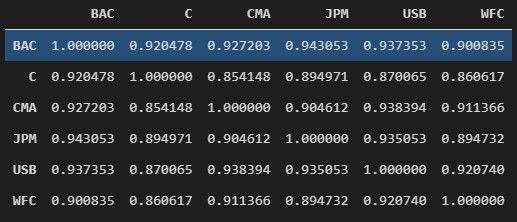
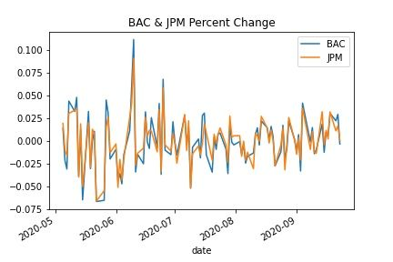
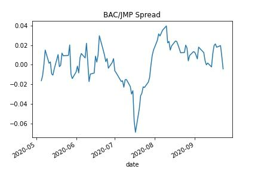
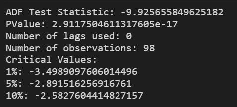
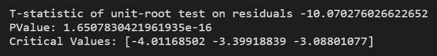

This is what it looks like.

From here, we can try and pick out a pair with a strong correlation to see if the relationship is appropriate for pairs trading.
In this case, the matrix is small enough for us to eyeball the best pair. But let’s automate this part too, in case we have to deal with a much larger correlation matrix down the road.
cor = stocks_df.corr()
In the code above, we start by saving the correlation table to a variable. We then want the largest number in the correlation matrix.
We first want to remove any perfect correlations which are denoted by 1. This is simply the coefficient of the stock to itself, not very useful. We can change any instances of 1 to 0.
cor[cor==1] = 0
Now we can determine which coefficient is the largest. The idxmax function will return the largest, except it will do so for each column. If we stack the DataFrame first, it will return only the pair with the strongest correlation.
cor.stack().idxmax()
In this case, the code returned a tuple containing BAC and JPM.
Now that we know that BAC and JPM have the strongest correlation in our table, let’s quickly plot a chart to visually confirm it.
%matplotlib inline
bac_jpm = pd.concat([stocks_df.BAC, stocks_df.JPM], axis=1)
bac_jpm.plot()
We’ve created another DataFrame with only the BAC and JPM data. We then used the plot() function from Pandas to display a chart in our Jupyter notebook.

Visually, it looks like a good correlation, just as our correlation coefficient had suggested.
But a good correlation alone does not imply that the two bank stocks are cointegrated.
Now, a concept called cointegration is going to be introduced.
Correlation and cointegration are two very different things. We are only using correlation to try and narrow down our focus.
There could be a scenario where one stock consistently outperforms another. In that case, the two stocks will still have a fairly high correlation, but the synthetic pair will not be stationary or cointegrated.
Let’s dig a little deeper to try and find out if this pair is suitable for a cointegration strategy.
The next step is to calculate the spread between BAC and JPM and plot it. After all, that is what we will be trading. If the two stocks are cointegrated, the chart should have some consistency in the variance from its mean.
spread = stocks_df.BAC - stocks_df.JPM
spread.cumsum().plot()
To calculate the spread, we need to subtract one stock from another. This is because we are using percent change data. If we were using closing prices, we would have divided one by the other to derive the spread.

The chart above does not show consistency in variance.
There is enough evidence here that the spread is mean-reverting between BAC and JPM. There was a larger than usual dip in July, but overall, the spread seems to revert to the 0 level continuously. This could be a good candidate for a cointegration strategy.
This should have given an intuitive idea of cointegration. Now, we are going to look at rigorous statistical methods that are employed to find the cointegration between pairs.
Read more: statistical methods to find cointegration
The code below will use the statsmodel python library.
The first statistical method we explained was the ADF test. We can use the `adfuller` method from the statsmodels library in order to run this.
The second method we explained is the Engle-Granger two-step method. We can use the coint method from statsmodels library in order to run this.
We will start by importing both methods.
from statsmodels.tsa.stattools import coint, adfuller
We will run our spread Dataframe through the adfuller method. This will let us know if our data is stationary or not.
Recall that if two assets combined produce a stationary time series, then those two assets are considered to be cointegrated.
But before running the test, we need to clean up our data. The statsmodels library currently does not handle missing data.
We can use the dropna function from Pandas to delete any empty rows.
spread.dropna(inplace=True)
Next, we will save the results from the adfuller method to a variable called adf_results.
adf_results = adfuller(spread)
The output might seem a bit confusing, so the next part of the code cleans it up a bit so it is easier to read.
print(f'ADF Test Statistic: {adf_results[0]}')
print(f'PValue: {adf_results[1]}')
print(f'Number of lags used: {adf_results[2]}')
print(f'Number of observations: {adf_results[3]}')
print('Critical Values:')
for k,v in adf_results[4].items():
print(f'{k}: {v}')
And here are our results.

The first thing we will look at is the P-Value. It should be below a certain threshold. Some discretion can be used to determine exactly what that threshold is.
Commonly used thresholds are either 5% or 1% (0.05 or 0.01). In this case, the P-Value falls well below the threshold.
Next, we will look at the test statistic which is roughly -9.9. We can compare this to the Critical Values provided by the test.
Since our test statistic is less than the 1% critical value of -3.5, we can assume that our data is stationary with 99% certainty.
In other words, this test tells us that we have found a cointegrated pair based on the data we have supplied.
The next test we will run is the `coint` test from the statsmodels library.
In the last test, we used the spread DataFrame that we created by subtracting percentage change data from one stock to another.
This test requires the percentage change data from both stocks. We have this available already in our `stocks_df` DataFrame.
Once again, we will start by removing any empty rows. Then we will save the results from the test to a variable.
stocks_df.dropna(inplace=True)
coint_results = coint(stocks_df.BAC, stocks_df.JPM)
We can then output the results to the screen.
print(f'T-statistic of unit-root test on residuals {coint_results[0]}')
print(f'PValue: {coint_results[1]}')
print(f'Critical Values: {coint_results[2]}')
In this test, we are only focused on the P-Value. Just like the Augmented Dickey-Fuller test, if the value is below a certain threshold, we can consider the data to be cointegrated.

The P-Value, in this case, is well below 0.01 which lets us know that our two stocks are cointegrated.
We now have both visual confirmation from our graphs and statistical confirmation that this strategy is suitable for a cointegration strategy.
However, there is one other important consideration. Recall that the ADF test showed us the number of observations was 98.
This means we tested 98 trading days worth of data. This is a rather small sample.
It may very well be that the pair shows cointegration during some periods and not others. We can run further tests on a larger sample to gain more insight.
We can also customize our data to an extent.
For example, let’s say it is determined that this spread moves well beyond the norm during earnings reports, and it is not profitable to trade during that time. So we can avoid these periods of an anomaly.
Here is a summary of the things we have covered so far in Trading Systems
Now, using what we have discussed so far, we can successfully find pairs that can be traded. But, there is a vital part of the quantitative that is yet to be discussed. It is the back-testing of the strategy we have made.